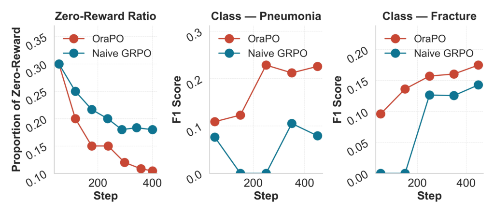

OraPO 深读：GRPO 一上来就 30% 的 group 全是 0 奖励、梯度近乎消失，凭什么把“失败 rollout”当 DPO 负例就能用 1K 样本刷出 RRG 的新 SOTA？
导读。主流放射报告生成（RRG）走的是“规模驱动”：在百万级图文对上多阶段训练（领域预训练 → 图文对齐 → 任务微调）、把 backbone 堆到 13B 以上。OraPO 反着来——单阶段、纯 RL，只用 1,000 条样本、一个 3B 的 Qwen2.5-VL，在 4 张 A10 上训练，就在 CheXpert Plus 上拿到 F1 0.341、MIMIC-CXR 上 F1 0.357 的新 SOTA。它要解决的真问题非常具体：把 GRPO（DeepSeek 那套 critic-free 的 RL）直接搬到 RRG 上，训练早期约 30% 的采样 group 会全部得到 0 奖励——因为一个通用 VLM 对放射学几乎一无所知，一组采样出来全是低质量报告，组内归一化的 advantage 全趋近 0，clipped-ratio 目标几乎没有梯度，更新被 KL 正则主导，GPU 在白白采样。OraPO 的核心赌注是：这些“失败的 rollout”不该丢掉，而该当成现成的负例——把它们和 ground-truth 报告组成偏好对，做一次轻量 DPO，正好在 GRPO 没梯度的地方补上梯度。再配一个 FactScore 式的稠密奖励（FactS）：把生成报告拆成原子临床事实、对 14 个 CheXpert 标签逐一做蕴含判断，用偏向 recall 的 $F_\beta$ 当奖励。立题问题因此是：当 RL 的探索在一个你的模型几乎不懂的领域里大面积失败，你是该花更多算力去重采样，还是该“就地取材”把失败本身转成监督？

1. 核心问题：RL 的探索在“模型几乎不懂的领域”里大面积失败，怎么办？
放射报告生成把两件难事耦合在一起：疾病预测（看出 edema、pleural effusion、pneumothorax）与自由文本生成（把这些发现写成有位置、有程度、句间一致的报告）。它在临床上很实在——影像积压严重而放射科医生短缺（论文引：英国放射顾问缺口 29%；美国约 1.4 万岗位对 1,150 名住院医毕业生），AI 草稿已被证明能把报告时间压下约 24%。所以这是个值得做、且对“事实正确性”要求极高的任务。
主流做法（图 1 上左）是规模驱动：多阶段（领域预训练 → 图文对齐 → 任务微调）在 MIMIC-CXR、CheXpert Plus 等动辄 20 万+ 图文对的大语料上训几十个 epoch，近来还流行上 13B+ 的 VLM。代价是数据和算力都极重。GRPO 本来是个解药——它去掉了 value critic、用一组采样的相对奖励算组内归一化 advantage，省显存省算力，还能跑“RL-only”（不必先 SFT/对齐）。但论文把 GRPO 搬到 RRG 上时，撞到两堵墙。
- Challenge (i)：全 0 奖励的 group。vanilla GRPO 在训练早期常常产出整组奖励都为 0 的 group（论文实测：前 50 步里约 30%，见图 2 左），导致梯度消失、rollout 浪费。已有变体要么重采样直到出现非 0 奖励（DAPO），要么加大 group size，但都因增加采样而更费算力，治标不治本。
- Challenge (ii)：RRG 没有“现成可验证的标量奖励”。不像选择题/数学/代码那样有一个二值的最终答案可查，放射报告是长文本、多事实、还要跨句一致。常用的 BLEU/CIDEr 这类参考重叠度量只抓表面流畅度，report-level 的临床指标又对句子级的事实错误和跨句矛盾惩罚不足——于是模型写出“读着通顺但临床误导”的报告（漏掉阳性、给出无依据的断言）。奖励必须能高效地逐句判断事实正确性。
问：全 0 奖励为什么会“梯度消失”？这看着像句直觉，能不能从 GRPO 的式子推出来？
引导：盯住 GRPO 的两步——先在组内把奖励归一化成 advantage，再用 clipped-ratio 目标更新。advantage 是用组内均值和标准差归一化的；如果一组里奖励全相等（全 0），均值和每个值之间没有差。
答：能，直接从式 (1)(2)(4) 推。设一个 prompt 采了 $K$ 个 completion，奖励 $r_j$。GRPO 先算组内均值 $\bar r=\frac1K\sum_j r_j$ 和标准差 $\sigma=\sqrt{\frac1K\sum_j(r_j-\bar r)^2+\varepsilon}$，再把 advantage 定义为 $A_j=(r_j-\bar r)/\sigma$。当这一组全部 $r_j=0$ 时，$\bar r=0$、$\sigma\approx\sqrt{\varepsilon}\to 0$，于是每个 $A_j=(0-0)/\sigma\approx 0$。再代回 GRPO 的 clipped-ratio 损失 $\mathcal{L}_{\text{GRPO}}=-\mathbb{E}\,\min(\rho_j A_j,\ \mathrm{clip}(\rho_j,1{-}\epsilon,1{+}\epsilon)A_j)+\lambda_{\text{KL}}\,\mathrm{KL}$：advantage 趋 0 让第一项（任务奖励项）几乎不产生梯度，整个更新被第二项 KL 正则主导——也就是只把策略往冻结的参考模型上拉，而不是往“做好任务”上拉。结果：采了 $K$ 个 completion，却没榨出任何有用信号，算力白烧。
Takeaway：“全 0 奖励 → 无梯度”不是玄学，是 advantage 归一化的代数后果——组内没有奖励差异，相对优势就处处为 0，clipped 目标自然没东西可优化。真正的病根是 base VLM 对放射学几乎没有领域知识，一采一整组都是低质量报告。
一个必须标注的精确化：“梯度为 0”不等于“参数不更新”
论文的措辞是“vanishing gradients”。严格说，当前步任务项梯度趋 0，并不直接等于该步参数零更新：现代优化器（OraPO 用 AdamW）的更新量来自历史梯度的滑动平均动量 $m_t=\beta m_{t-1}+(1-\beta)g_t$，即便某步 $g_t\approx0$，只要历史动量非 0，参数仍会被动量推着动——苏剑林在讨论梯度 Dropout 时正点出过这一点：“某个参数当前梯度为 0，也不代表更新量为 0，因为带动量的优化器更新量正比于动量，而动量是历史梯度的滑动平均”[archives/8764]。所以这里更准确的描述是：全 0 奖励的 group 不向任务目标贡献新的有效梯度信号，更新退化为“KL 正则 + 历史动量的余势”，对学会“看懂这张片子”毫无帮助——这正是 OraPO 要在这些步上注入 DPO 梯度的动机。
2. 贡献拆解：作者明确提出了什么？
作者明确提出的三条贡献（论文 §1 结尾）：
- OraPO：Oracle(DPO) 教育式 GRPO。把失败探索转成直接偏好监督，显著提升数据/算力效率。作者称这是首个把“直接偏好学习”与“GRPO 式 RL”整合起来做高效训练的工作。
- FactS Reward。对 ground-truth 标签做事实级蕴含判断，给出稠密、可解释的反馈，让报告对齐到诊断事实，而无需长 reasoning trace。
- 新 SOTA。在 RRG 上以 2–3 个数量级更少的训练数据，超过此前最佳模型（MambaXray-L）的临床有效性 F1 与 recall。
读数提醒：OraPO 的“评测姿态”和它的卖点深度绑定
OraPO 报告的核心指标是临床有效性——对 14 个 CheXpert 病理类各算 Precision/Recall/F1，再做宏平均（不加权，让罕见病和常见病等权）。它不主打 BLEU/CIDEr 这类文本相似度。这是它的立场：报告写得像不像不重要，该报的病有没有报出来（recall）、报出来的对不对（precision）才重要。理解结果时要带着这个尺子：OraPO 的 precision 其实低于若干基线，但它有意把宝押在 recall 上（见 §5.4 FactS 的 $\beta$）。
读者能进一步推断的是：这篇真正推进的单一变量不是“又一个 RL 变体”，而是“失败 rollout 的再利用”。已有 GRPO 变体（DR.GRPO、CISPO、GSPO、DAPO）大多在优化稳定性上做文章，数据量和 epoch 基本不变、有些还增采样。OraPO 换了个角度——它不试图“让 GRPO 少失败”，而是承认会失败、并把失败本身变成另一种监督。这才是它能把数据砍到 1K 的根本原因。
3. 数据：每个数据集只采 1,000 条，“极致数据高效”本身是主张
OraPO 在两个公开数据集上验证，但用法极省。
- CheXpert Plus。把胸片 DICOM 关联到去标识化报告，按报告子段组织、标注 14 个目标病理。公开版约 223K 图文对、约 187.7K 个 study、约 6.47 万患者，合计约 36M 报告 token。
- MIMIC-CXR。377,110 张图来自 227,943 个 study、65,379 名患者；每个 study 含一或多视图（正位/侧位）和按 Findings/Impressions 组织的自由文本报告。
关键在用量：OraPO 每个数据集只采样 1,000 个 study（CheXpert Plus 1K + MIMIC-CXR 1K），并用 CheXpert labeller 做出一个类别平衡的 ground-truth 标签集、剔除缺段的报告。这 1K 占 CheXpert Plus 标准 223K 切分的约 0.45%，仅为当前 SOTA 模型 MambaXray 所用 1.27M 的约 0.079%；MIMIC-CXR 上比例相近。
问：1K 样本能学出 SOTA，是不是“数据其实不重要”？还是另有玄机？
答：不是数据不重要，而是 OraPO 把“数据的角色”换了。规模驱动方法用海量数据做模仿式监督（SFT 让模型背会“正确报告长什么样”）。OraPO 不模仿——它用 1K 的 ground-truth 作奖励信号的锚（FactS 比对的标签）+ DPO 的正例（chosen），让模型在自己采样的报告里学“什么该报、什么不该报”。监督信号的密度（每条样本里 14 个标签的事实级反馈 + 一组 rollout 的偏好对比）远高于“一条样本对应一份目标报告”的 SFT。所以是每条样本被榨出的监督变密了，不是数据变得不必要。这也呼应 §2：真正变的是“如何用数据”，不是“用多少数据”。
Takeaway：1K 不是魔法，是把每条样本从“一份要模仿的目标”升级成“一组事实级奖励 + 一对偏好监督”——监督密度上去了，数据量才下得来。
4. Pipeline：一张片子 → 采一组报告 → FactS 打分 → 按 ZRR 在 GRPO 与 DPO 间切换
把图 1 上右展开成一条训练回路，每个 prompt（= 一张 X 光 + 生成指令）走这五步：
- 采样（Rollout）。当前策略 $\pi_\theta$（3B Qwen2.5-VL）对该片子采 $K=8$ 个候选报告。
- FactS 打分。对每个报告抽原子临床事实、对 14 个标签做蕴含判断、算偏向 recall 的 $F_\beta$ 当奖励 $r_j\in[0,1]$。
- 判断这组卡没卡。算这一组的 Zero-Reward Rate（有多少 rollout 奖励为 0），过 EMA 平滑成 $\tilde z_i^{(t)}$，再映射成混合权重 $w_i^{(t)}$。
- 按 $w$ 分流。$w$ 小（GRPO 有可用信号）→ 主要走 GRPO 的探索/利用；$w$ 大（GRPO 卡住、全 0 奖励多）→ 触发轻量 DPO：把 ground-truth 报告当 chosen、把这组零奖励 rollout 当 rejected，做一次偏好更新。
- 合成梯度更新。$\mathcal{L}_{\text{OraPO}}=\frac1B\sum_i\big[(1-w_i^{(t)})\mathcal{L}_{\text{GRPO}}+w_i^{(t)}\mathcal{L}_{\text{DPO}}\big]$，反传更新 $\pi_\theta$。
{kind=link}

数据飞轮：为什么这条回路会自我增强？
论文把它叫 self-reinforcing data flywheel。逻辑是：早期 $w$ 大、DPO 主导（“教育期”），模型被 ground-truth 拉离低质量模式；随着模型学会罕见发现的线索，同样的 prompt 不再一采就全 0，ZRR 下降、$w$ 自动退火变小，GRPO 接管（“探索/利用期”）。而模型变强后产出的负样本质量也在变高（更接近正确、更有信息量），这些更难的负例反过来给 DPO/GRPO 更强的梯度，推动模型继续涨——形成正向复利。图 2 左的“快速下降”就是这条飞轮在转的直接证据。
5. 方法：把“失败 rollout”从垃圾变成正好缺的那截梯度
5.1 两块预备件：GRPO 与 DPO 各自的损失
先把两个 building block 摆清楚，后面才好看它们怎么拼。GRPO（式 1–4）critic-free：对 prompt $(x,p)$ 采一组 $\{\hat y_j\}_{j=1}^K$、收奖励 $r_j$，组内归一化出 advantage $A_j$，再用 PPO 式的 clipped-ratio 更新到一个冻结参考策略 $\pi_{\text{ref}}$：
DPO（式 5–7）从偏好对 $(x,p,y^+,y^-)$ 学“偏好 chosen $y^+$ 胜过 rejected $y^-$”，相对一个冻结参考模型，最大化两者的对数概率边际：
5.2 关键一步：失败 rollout 当负例，为什么是“免费的”且正好补上 GRPO 缺的梯度
OraPO 的核心动作（式 12）极简：当一组采样卡住（多为零奖励），把 ground-truth 报告 $y_i^\star$ 设为 chosen，把这组模型采样里的低/零奖励 rollout $\{\hat y_{i,j}\}$ 当 rejected，套式 7 做 DPO。
问：为什么说这是“免费”的？又凭什么说它补的梯度正好是 GRPO 缺的那一截？给我两条独立的理由。
路径 A（“免费”——成本侧，自下而上）：DPO 需要偏好对 $(y^+,y^-)$。常规做法要么人工标注偏好、要么训一个奖励模型挖 hard negative、要么额外跑一个生成器造负例——都要花算力或人力。OraPO 的两端都是现成的：$y^+$ 是数据集里本就有的 ground-truth 报告；$y^-$ 是 GRPO 这一步已经采过、本来要扔掉的零奖励 rollout。也就是说，OraPO 没有为 DPO 多采一个 token、多标一条数据——它只是把“准备丢进垃圾桶的失败探索”捡起来贴上“rejected”的标签。论文原话：这些零/低奖励 rollout 是“现成的负例（ready-made negative examples），无需额外计算或标注”，还是“手工难以获得的、高质量的领域特定负样本”。
路径 B（“正好补缺”——梯度侧，自上而下）：回到 §1 的推导——全 0 组里 $A_j\approx0$，GRPO 的 clipped-ratio 项没有梯度方向可言（组内无差异，不知道该把谁拉高谁压低）。但 DPO 不依赖组内奖励差异：式 7 的梯度来自 $\Delta^+-\Delta^-$，即“ground-truth 报告”与“失败 rollout”之间的对数概率边际。哪怕这组 rollout 奖励全等于 0（GRPO 眼里完全无差别），DPO 仍能给出明确方向：提高 ground-truth 的概率、压低这些失败 rollout 的概率。换句话说，GRPO 缺的是“当所有采样都失败时的学习信号”，而 DPO 用一个组外的锚（ground-truth）恰好提供了这个信号。两条路径独立指向同一结论：失败 rollout 在 GRPO 眼里是零信息，在 DPO 眼里却是高质量负例——同一批样本，换个目标函数就从“没梯度”变成“有明确梯度”。
Takeaway：“免费”是因为正负例都是现成的（GT + 待丢弃的 rollout）；“正好补缺”是因为 DPO 的梯度来自“GT vs 失败”的边际，而非 GRPO 依赖的组内奖励差异——后者在全 0 组里恰恰塌成 0。
5.3 ZRR 与自适应混合权重：把“先教育后探索”写成一个退火旋钮
问题来了：什么时候该 DPO、什么时候该 GRPO？OraPO 不写死，而是用 Zero-Reward Rate（ZRR）来 per-prompt 地度量“GRPO 卡得多严重”。对 prompt $x_i$ 的一组奖励 $\{r_{i,j}\}$，原始零奖励率与其 EMA 平滑为：
再把 $\tilde z_i$ 映射成一个有界、单调的混合权重，用来控制“注入多少 oracle 教育”：
最后用 $w_i^{(t)}$ 在两个目标间逐 prompt 加权（式 11）：
问：这个退火为什么能形成“先教育、后探索”的飞轮，而不是一直 DPO 或一直 GRPO？
答：因为 $w$ 不是时间表写死的，而是被 ZRR 反向驱动的。训练初期 base 模型不懂放射学，一采就全 0，$\tilde z_i$ 高 → $w_i$ 高 → DPO 主导（教育期）。一旦 DPO 把“小尖端气胸”“细微间质性水肿”这类难发现的线索教进去，同一 prompt 不再一采就全 0，$\tilde z_i$ 自动下降 → $w_i$ 退火变小 → GRPO 接管（探索/利用期）。这里的精妙在于退火信号来自模型自己的进步：你不需要预设“前 N 步教育、后面探索”，模型学会了哪个 prompt，哪个 prompt 的 $w$ 就自己降下去。简单 study 上 ZRR 一开始就低、直接走 GRPO；难 study 上先教育再放手——每个 prompt 的“教育 → 探索”切换点是它自己的难度决定的。这就是飞轮：进步降低 ZRR，ZRR 降低 $w$，$w$ 把更多算力交给 GRPO 去探索，探索产出更强的模型和更有信息量的负例，再回头喂 DPO/GRPO。
Takeaway：$w$ 是个“跟着模型懂多少自动调”的旋钮——它把“先教育后探索”从人工时间表变成了由 ZRR 闭环驱动的自适应退火，难易 prompt 各按自己的节奏切换。
5.4 FactS 奖励：三步把报告变成稠密、可解释、偏 recall 的信号
OraPO 需要一个可靠又算得起的奖励。它不优化 report-level 代理或 embedding 相似度（那些偏向流畅改写而非可验证事实），而是把生成报告当作它自己的 rationale，做 FactScore 式三步（式 13–15）：
- Step 1：抽原子临床事实。用 GPT-4.1 把生成报告 $\hat y_i$ 抽成一组原子、可验证的临床陈述 $F(\hat y_i)=\{s_{i,k}\}$，如“no pleural effusion”“linear atelectasis at the left base”。
- Step 2：对 ground-truth 标签逐一蕴含判断。设固定标签集 $L$（如 14 个 CheXpert 标签），$z_{i,\ell}^\star\in\{0,1\}$ 是 study $x_i$ 上标签 $\ell$ 的真值；用 LLM 蕴含检查把事实集映射成标签级预测 $\hat z_{i,\ell}=\mathbf{1}[\exists s\in F(\hat y_i)\ \text{s.t.}\ \mathrm{entails}(s,\ell)=\text{true}]$。对 $\ell$ 的明确矛盾被当作该标签的假阳（抑制无依据断言）。
- Step 3：稠密、可解释的奖励。由 $(\hat z_{i,\ell},z_{i,\ell}^\star)$ 算 per-instance precision $P_i$、recall $R_i$，奖励取 $F_\beta$。
问：$F_\beta$ 里取 $\beta>1$ 为什么就能把 recall 顶上去？这跟临床偏好有什么关系？
从 $F_\beta$ 的结构看：$F_\beta=\frac{(1+\beta^2)PR}{\beta^2 P+R}$ 可以重写成 $P,R$ 倒数的加权调和平均——$\beta^2$ 是 recall 相对 precision 的权重。$\beta>1$ 时，分母里 $\beta^2 P$ 这一项放大，意味着同样幅度的 recall 损失比 precision 损失更狠地拉低奖励。模型用 RL 最大化这个奖励，自然被推着“宁可多报、不可漏报”——多报（precision 降）的惩罚被调小，漏报（recall 降）的惩罚被调大。这与 §2 的临床立场闭环：放射场景里假阴性（漏掉异常）可能延误治疗、后果严重，而假阳性通常只是多一次复核；既然放射科医生做最终把关，他们更偏好高灵敏度的 AI 草稿（哪怕牺牲一点 precision）。所以 $\beta>1$ 不是调参技巧，而是把“漏报比误报更危险”这条临床先验直接编码进奖励函数。这也解释了实验里 OraPO 的 recall 高得离谱（CheXpert Plus 0.832、MIMIC-CXR 0.891）而 precision 偏低（约 0.24）——这是有意为之的 trade-off，不是缺陷。
Takeaway：$\beta>1$ 把 recall 的权重写进 $F_\beta$ 的分母，等于告诉 RL“漏报的惩罚远大于误报”——奖励函数因此成了临床“重灵敏度”偏好的载体，recall 被顶上去是这条偏好的直接结果。
为什么“报告即 rationale”这一招省掉了长 reasoning trace
原始 GRPO（DeepSeek-R1 那类）把奖励只给最终答案，reasoning trace 基本是生成副产物、不保证事实接地。FactS 反过来：它直接对报告本身做事实级评分，于是“生成的报告”既是答案、又充当了那条“被验证过的 reasoning trace”——一个有经验的放射科医生的认知轨迹本就该是“逐条发现 → 逐条落到诊断”。这样既保证了诊断发现正确，又不需要额外的 critic、奖励模型或长链推理，token 开销低。
6. 训练配置：3B 策略、4× A10、纯 RL 单阶段
实现细节（论文 §4.1）：在 1,000 个 CheXpert Plus study 上微调一个 3B Qwen2.5-VL 策略，RL-only（无 SFT/对齐），用 HuggingFace TRL 的 GRPOTrainer + transformers + accelerate。
| 项目 | 取值 |
|---|---|
| 策略模型 | Qwen2.5-VL-3B（base/Instruct） |
| 训练范式 | RL-only 单阶段，无 SFT / 无对齐预训练 |
| 训练数据 | 每数据集 1,000 个 study（CheXpert Plus 1K / MIMIC-CXR 1K） |
| Batch size $B$ | 16 |
| 每 prompt 采样数 $K$ | 8 |
| 奖励 | FactS（$F_\beta$，$\beta>1$ 偏 recall），GPT-4.1 抽事实 + LLM 蕴含 |
| 硬件 | 4× NVIDIA A10（24 GB） |
| 软件栈 | PyTorch 2.7.1 / CUDA 12.1 / HF TRL GRPOTrainer |
关于算力（粗估，不等同账单）
论文给的是“modest hardware（4× A10）”，并未披露总 GPU 卡时或墙钟时间，也没给完整的 LR/优化器/步数表（称见 Supplementary）。按论文披露数字粗略估算——4 张 A10（24GB）、3B 策略、batch 16 × 每 prompt 采 8 个 completion，确实属于“单机可跑”的量级，与“百万数据 + 13B + 多阶段”的主流配方差出几个数量级——但具体卡时论文未说明，此处不折算成具体小时数，以免给出无依据的数字。此外 FactS 每步要调 GPT-4.1（抽事实）+ LLM（蕴含），这部分的 API 调用成本论文也未量化。
7. 实验：三场——对任务专用模型、对 SFT 对齐、对人类金标准
判断：三组主结果都在回答同一句话——“用 1K 数据 + 3B 模型，OraPO 的临床有效性能不能打过用海量数据/大模型的对手”。指标统一为 14 个病理类的宏平均 Precision/Recall/F1。逐一看。
7.1 对 RRG 任务专用模型（CheXpert Plus，表 1）
表 1 把 OraPO 摆进 20+ 个任务专用 RRG 模型里（多数在 223K 全量、甚至多源/多阶段上训）。下表保留代表性行（含强基线与最弱基线，完整 20+ 行见原文 Tab. 1）。
| 算法 | Venue | Precision | Recall | F1 | Train Size |
|---|---|---|---|---|---|
| R2Gen | EMNLP20 | 0.318 | 0.200 | 0.181 | 223K |
| Token-Mixer | IEEE TMI23 | 0.309 | 0.270 | 0.288 | 223K |
| PromptMRG | AAAI24 | 0.258 | 0.265 | 0.281 | 223K |
| CheXagent | arXiv24 | 0.373 | 0.194 | 0.186 | 8.5M |
| MambaXray-B | CVPR25 | 0.333 | 0.264 | 0.273 | 1.27M |
| MambaXray-L（前 SOTA） | CVPR25 | 0.377 | 0.319 | 0.335 | 1.27M |
| VLCI（最新基线） | IEEE TIP25 | 0.341 | 0.175 | 0.163 | 223K |
| OraPO（本文） | — | 0.237 | 0.832 | 0.341 | 1K |
读这张表抓三点。其一，F1 0.341 是全场最高，压过前 SOTA MambaXray-L（0.335），而训练数据是它的约 0.079%。其二，Recall 0.832 断层第一，较最佳基线 +160.8%，较最新基线 VLCI 在 F1 上 +109.2%、recall 上 +375.4%。其三，precision 0.237 明显低于 MambaXray-L 的 0.377——这正是 §5.4 说的 $\beta>1$ 带来的有意 trade-off：偏向“每个发现的覆盖”而非“措辞精确”。论文的诚实结论是“recall-oriented 草稿在实践中更被偏好”，因为放射科医生做最终复核、更看重灵敏度。
7.2 对 SFT 对齐式 LLM/VLM（CheXpert Plus，表 2）
表 2 换一个对照面：用流行的对齐式 SFT 方法 R2GenGPT，配 16 个不同的开源 LLM/VLM backbone（6–13B，均在 223K 上微调）。下表保留代表性行（完整 16 行见原文 Tab. 2）。
| LLM/VLM | Precision | Recall | F1 | Params | FT-Size |
|---|---|---|---|---|---|
| InternLM | 0.307 | 0.274 | 0.284 | 7.3B | 223K |
| Vicuna-V1.5 | 0.334 | 0.258 | 0.276 | 6.7B | 223K |
| Llama-2 (13B) | 0.321 | 0.254 | 0.267 | 13.0B | 223K |
| Orca-2 (13B) | 0.317 | 0.242 | 0.257 | 13.0B | 223K |
| Yi-1.5 (9B) | 0.336 | 0.241 | 0.243 | 8.8B | 223K |
| MiniCPM-V2.5 | 0.254 | 0.152 | 0.122 | 8.4B | 223K |
| OraPO（本文） | 0.237 | 0.832 | 0.341 | 3B | 1K |
这张表要支撑的结论是：OraPO 以 3B / 1K 同时压过所有 6–13B / 223K 的对齐式 SFT backbone，F1 0.341 比最强的 InternLM（0.284）高一截，recall 更是高出一个量级。论文据此断言“事实级监督的 OraPO 是比标准视觉-语言对齐更优的学习范式——用不到一半的 backbone 参数、远少的数据拿到更高性能”。
7.3 MIMIC-CXR（表 3）：跨数据集泛化
把同一套搬到 MIMIC-CXR，验证不是 CheXpert Plus 上的过拟合。
| 算法 | Venue | Precision | Recall | F1 | Train Size |
|---|---|---|---|---|---|
| R2Gen | EMNLP20 | 0.333 | 0.273 | 0.276 | 227K |
| CXRMate | IMU24 | 0.277 | 0.351 | 0.283 | 227K |
| HERGen | ECCV24 | 0.415 | 0.301 | 0.317 | 145K |
| ChEX | ECCV24 | – | – | 0.326 | 227K |
| GIT-CXR | INFO25 | – | – | 0.327 | 227K |
| MCA-RG | MICCAI25 | 0.443 | 0.306 | 0.335 | 227K |
| MambaXray-L（前 SOTA） | CVPR25 | 0.371 | 0.321 | 0.340 | 1.27M |
| OraPO（本文） | — | 0.242 | 0.891 | 0.357 | 1K |
F1 0.357 较最佳基线（MambaXray-L 0.340）+5.0%；Recall 0.891 较最强基线 recall（CXRMate 0.351）+153.8%。precision 0.242 仍偏低但 F1 全场最高。两个数据集一致——OraPO 的“高 recall + 最高 F1 + 极省数据”不是单数据集偶然。
7.4 人类金标准 + 商用 API 对照（表 5）
CheXpert labeller 是自动标注，可能有噪声。表 5 换上人类金标准：CheXpert 验证集 200 个 study、由三名持证放射科医生独立标注、多数投票定真值。同时把两个商用 API（GPT-4.1、GPT-5 Thinking，用相同图像与生成提示）拉进来对照。
| 方法 | Train Size | Precision | Recall | F1 |
|---|---|---|---|---|
| GPT-4.1 | – | 0.292 | 0.305 | 0.253 |
| GPT-5 (Thinking, medium) | – | 0.261 | 0.421 | 0.301 |
| CheXagent | 8.5M | 0.462 | 0.226 | 0.254 |
| MambaXray-B | 1.27M | 0.362 | 0.254 | 0.238 |
| MambaXray-L | 1.27M | 0.395 | 0.326 | 0.280 |
| OraPO（本文） | 1K | 0.234 | 0.641 | 0.288 |
在专家金标准上 OraPO（0.234/0.641/0.288）在 Recall 与 F1 上同时超过 CheXagent、MambaXray-B/L。对 GPT-4.1：recall +110.2%、F1 +13.8%。对 GPT-5 Thinking：recall +52.3%，但 F1 -4.3%（略低）。论文额外强调一个工程现实：3B 模型推理 3.3 s/图，GPT-5 Thinking 要 25.2 s/图，且无 per-token API 费、部署更轻——“在时间敏感的临床场景里更划算”。
8. 消融：FactS 与 OraPO 各自贡献了多少？（表 4）
表 4 是全文最该细读的一张——它把“base → +FactS → +OraPO”的因果一格一格拆开（CheXpert Plus，14 病理宏平均）。
| FactS | GRPO | DPO | SFT | Train Size | Precision | Recall | F1 |
|---|---|---|---|---|---|---|---|
| × | × | × | × | 0 | 0.097 | 0.104 | 0.034 |
| × | ✓ | × | × | 1,000 | 0.026 | 0.162 | 0.089 |
| ✓ | ✓ | × | × | 1,000 | 0.204 | 0.605 | 0.291 |
| ✓ | ✓ | ✓ | × | 400 | 0.217 | 0.732 | 0.296 |
| ✓ | ✓ | × | ✓ | 1,000 | 0.171 | 0.176 | 0.106 |
| ✓ | ✓ | ✓ | × | 1,000 | 0.237 | 0.832 | 0.341 |
- base 几乎不会写报告。未微调的 3B（行 1）F1 仅 0.034——印证 §1“通用 VLM 对放射学一无所知”，这也是 GRPO 一上来全 0 奖励的根因。
- naive GRPO（accuracy 奖励）几乎没用。行 2 F1 仅 0.089，precision 反而掉到 0.026——稀疏的 accuracy 奖励在 RRG 上提供不了有效信号。
- FactS 是第一台发动机。行 3（FactS+GRPO）把 F1 拉到 0.291（较行 2 +227%）、Recall 到 0.605（+274%）、Precision 到 0.204（+685%）。说明事实级蕴含奖励本身就提供了稠密、临床对齐的监督。
- OraPO 在 FactS 之上再加一截。行 6（全开）F1 到 0.341（较 FactS-only +17.2%）、Recall +37.5%、Precision +16.2%。
- 400 条 > 1000 条（FactS-only）：数据效率的硬证据。行 4：OraPO 仅用 400 个 study 就拿到 F1 0.296，已超过 FactS-only 用 1000 个的 0.291。这是“失败 rollout 再利用”把每条样本榨更干的直接证据。
- SFT 会让 recall 崩。行 5（FactS+GRPO+SFT）F1 暴跌到 0.106、recall 0.176（较 FactS+GRPO 分别 -63.6%、-70.9%）。
问：DPO 和 SFT 都是“用 ground-truth 教模型”，为什么换成 SFT（行 5）recall 直接崩，而 DPO（行 6）却把 recall 顶到 0.832？
答：差别在“只教正例”还是“同时教正反例”。SFT 只模仿 ground-truth 的措辞——它教模型“说对的时候该说什么”，却没教“不该说什么”。于是“漏掉全部真阳性”的报告并没有被显式惩罚，模型在小数据上很容易过拟合、退化成“少说少错”，recall 和 F1 一起崩。论文还点出小数据 SFT 本就不稳、易过拟合。DPO 则是显式的对比：它把概率质量从“no-TP（漏报）”那类输出上推开（rejected 是失败 rollout），同时拉向 ground-truth（chosen）。被推开的恰恰是“漏报”模式，于是 recall 被有效顶上去。这正是 §5.2 路径 B 的实证落点——DPO 的梯度来自“GT vs 失败”的边际，而失败 rollout 里大量就是“漏报”，压低它们 = 抬高 recall。
Takeaway：SFT 只给正例、不惩罚漏报，小数据上退化成“少说少错”导致 recall 崩；DPO 把失败 rollout（多为漏报）当负例显式压低，等于反向把 recall 顶起来——这就是“偏好对比”优于“纯模仿”的机理。
8.1 定性例（图 3，附录，文本转写）
附录图 3 给了三个 CheXpert Plus 上的例子：每行是“X 光 + GT 报告 + GT 标签 + OraPO 生成报告 + 预测标签及其支撑事实 + ROUGE-L F1”。这张图是整页的对照表，含三张缩略 X 光与大段文本；按本站惯例不贴模糊整页截图，转写其要点如下：
| 例 | GT 标签 | OraPO 命中的标签（由原子事实支撑） | ROUGE-L F1 |
|---|---|---|---|
| 1 | Cardiomegaly, Edema | Cardiomegaly（“心影增大/向胸骨右侧扩张”）、Edema（“弥漫间质性混浊/肺血管中央增多/符合肺水肿”） | 0.102 |
| 2 | Cardiomegaly, Lung Opacity, Lung Lesion, Consolidation, Pneumonia | 上述各项均由“心纵隔影增大”“双侧结节性病灶”“双侧肺炎性混浊”等事实逐条支撑，并外加 Pleural Effusion | 0.114 |
| 3 | Lung Opacity, Consolidation, Pneumonia, Pleural Effusion | “左肺门旁斑片状混浊”支撑 Opacity/Consolidation/Pneumonia；“少量胸腔积液”支撑 Pleural Effusion | 0.164 |
这张转写要点出的是：ROUGE-L 都很低（0.10–0.16），但临床标签命中良好——OraPO 生成的报告措辞与 GT 差很远（所以表面相似度低），却把该报的病理逐条报出并给出支撑事实。这恰好印证“别用 BLEU/ROUGE 这类表面度量评 RRG”，也说明 FactS 把优化目标对准了事实接地而非措辞复刻。
9. 局限、复现门槛与风险
- precision 系统性偏低（约 0.24）。这是 $\beta>1$ 的设计代价：高 recall 的另一面是更多假阳。论文把它定位为“面向临床复核的有意 trade-off”，但在“precision 也要紧”的场景（如自动归档、计费）这会是问题。
- 强依赖外部 LLM。FactS 每步要用 GPT-4.1 抽原子事实、用 LLM 做蕴含判断。这意味着：(1) 奖励质量被这些 LLM 的能力与一致性绑定；(2) 训练期有未量化的 API 成本（论文未披露）；(3) 蕴含判断本身可能出错，论文把“明确矛盾”记为假阳来部分缓解，但 LLM 判断的系统偏差会直接进奖励。
- 评测局限于 14 个 CheXpert 标签的宏平均。FactS 的事实只对“是否命中某标签”做二值蕴含，不评位置/侧别/大小/程度/时间变化等细粒度属性——论文把“细粒度属性蕴含”列为未来工作 (4)。所以“事实正确”目前是标签级，不是属性级。
- 仅在 RRG / 胸片上验证。OraPO 对“稀疏信号任务”（GRPO 易卡）的普适性尚未验证，论文把“扩到多步数学、代码”列为未来工作 (1)；模型/数据规模的 scaling（超出 3B/1K）也未研究 (2)。
- 奖励可验证性的边界。FactS 成立的前提是“有 ground-truth 标签集可比对”。对没有结构化标签、奖励不可验证的任务，得换 rubric-driven 信号（论文未来工作 (3)）。
- 复现门槛。方法侧不重（3B + 4×A10 + HF TRL），但有两道坎：(1) 无公开代码仓（截至本文撰写已核查 arXiv/GitHub，未见官方实现）；完整超参作者称见 Supplementary，正文未全列。(2) FactS 需可用的 GPT-4.1 等 LLM 接口，离线/隐私敏感环境复现受限。
10. 总结：一句话与三条 takeaway
一句话：OraPO 的洞见是“别和 RL 的失败硬刚——把失败接住”：当 GRPO 在一个模型几乎不懂的领域里采出一整组零奖励 rollout、梯度塌成 0 时，这些 rollout 在 DPO 眼里恰是现成的高质量负例，用 ground-truth 当正例做一次轻量偏好更新，正好补上 GRPO 缺的那截梯度；再用 ZRR 驱动的自适应权重让“教育→探索”随模型进步自动切换，配偏 recall 的 FactS 事实级奖励，于是 1K 数据 + 3B 模型就能在 RRG 上刷出新 SOTA。
三条 takeaway（按重要性）
- 失败 rollout 的“双重身份”是全文的钥匙。同一批零奖励 rollout，在 GRPO 的组内归一化里信息为 0（advantage≈0、无梯度），在 DPO 的“GT vs 失败”边际里却是明确的负例（有梯度方向）。换目标函数就把垃圾变成监督——这是“免费且正好补缺”的本质（§5.2）。
- $w$ 是“跟着模型懂多少自动调”的退火旋钮。ZRR 高（模型不懂）→ DPO 教育；模型学会 → ZRR 降 → $w$ 退火 → GRPO 接管。难易 prompt 各按自己难度切换，形成自我增强的数据飞轮（§5.3、图 2）。
- 奖励函数是临床偏好的载体。$F_\beta$ 取 $\beta>1$ 把“漏报比误报更危险”直接编码进奖励，于是 recall 被顶到 0.83/0.89，precision 偏低是有意 trade-off 而非缺陷（§5.4、§7.1）。
推荐阅读路径：先看图 1（省 vs 强的双角）建立动机 → §1 推“全 0 组为何无梯度” → §5.2 看“失败 rollout 双重身份”的两条论证 → §5.3 的 ZRR 退火 → 表 4 消融把 FactS/OraPO/SFT 的因果一格格对上（尤其行 4 的 400>1000、行 5 的 SFT 崩 recall）。
11. 参考与图片出处
论文。Zhuoxiao Chen, Hongyang Yu, Ying Xu, Yadan Luo, Long Duong, Yuan-Fang Li. OraPO: Oracle-educated Reinforcement Learning for Data-efficient and Factual Radiology Report Generation. arXiv:2509.18600v2 [cs.CV], 2026（Oracle Health & AI; The University of Queensland）。arXiv 摘要页 · PDF。
代码与数据。截至本文撰写，未找到官方公开代码仓（已核查 arXiv 页与 GitHub，仅见 awesome-RRG 列表收录该论文，无官方实现链接）。CVF CVPR 2026 proceedings 页尚未上线（核查返回 403）。数据集为公开资源：CheXpert Plus、MIMIC-CXR。
kexue.fm 方法学引用（红线遵守）。本页的机制推导以 kexue:su 方法学（动机→机制→假设→≥2 条独立验证）展开。检索语料后，仅有一处主张命中可引证的卡片：在 §1“梯度为 0 不等于参数不更新”的精确化处，引苏剑林关于带动量优化器更新量来自历史梯度滑动平均的论述 [archives/8764]（《ChildTuning：试试把 Dropout 加到梯度上去？》，kexue.fm/archives/8764）。其余检索结果（BERT 初始化、RealFormer、GAN 等）与 OraPO 的实际机制无关，故未引用；GRPO/DPO/FactScore 等第三方方法均按其原始论文归属（DeepSeekMath、Rafailov et al.、Min et al. 等，见原文参考文献），不借 kexue 博客转引。
图片出处。本页所有图片均为从论文 PDF（arXiv:2509.18600v2）本地抽取的 PNG，用于学术评述。图 1 = PDF 图 1（teaser，p1）；图 2 = PDF 图 2（ZRR 与 class-level F1 曲线，p3）。PDF 图 3（附录定性例，p12）为含缩略 X 光的整页对照表、矢量+文本混排，按本站惯例不贴模糊整页截图，已在 §8.1 转写为表格。